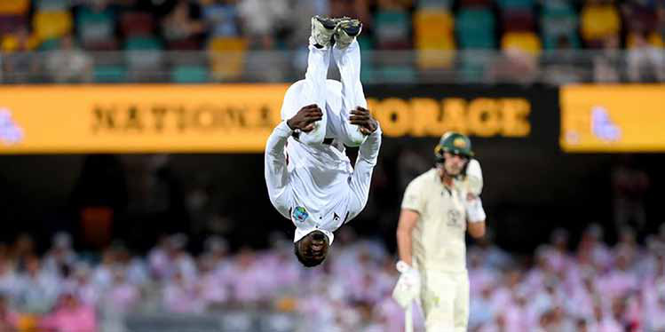
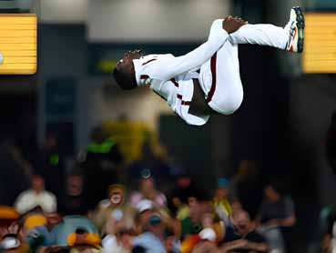
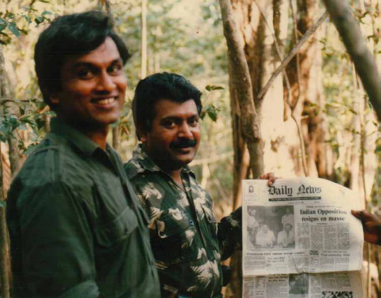
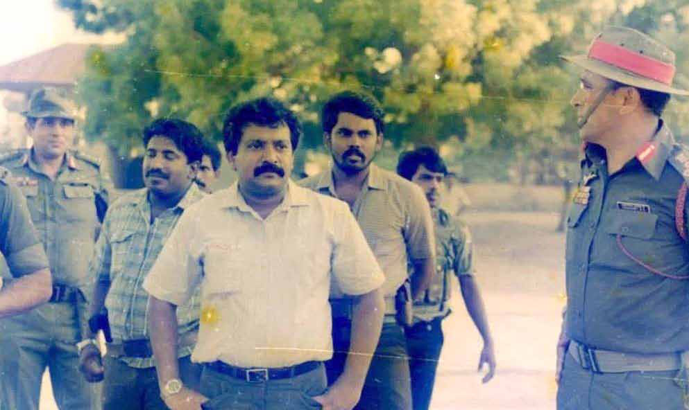
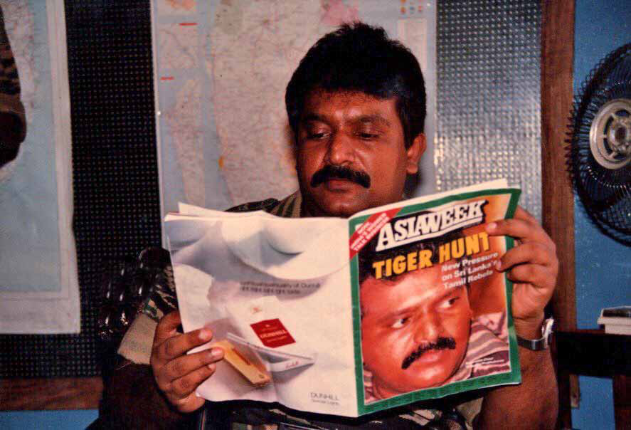
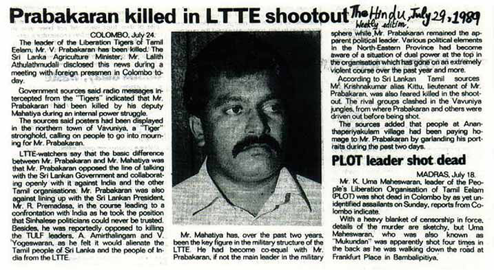
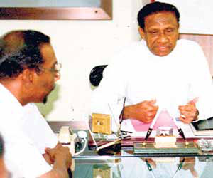
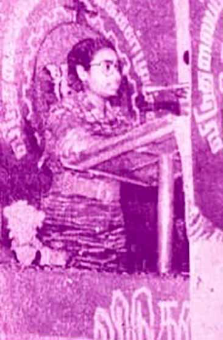
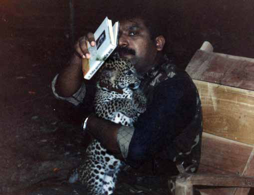
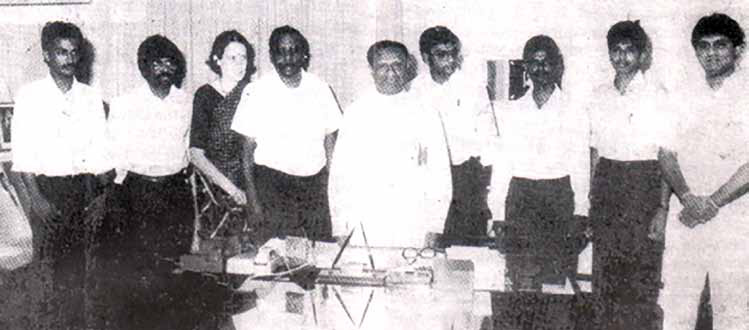

Sinclair's Backflip Raises the Bar (and the Laughs) in Cricket Celebrations
Sinclair's Backflip Raises the Bar (and the Laughs) in Cricket Celebrations
Jaffna Monitor hellojaffnamonitor@gmail.com 20 I n an electrifying display of talent and showmanship, West Indies' newest cricket sensation, Kevin Sinclair, etched his name into the annals of Test cricket history with one of the most spectacular wicket celebrations ever witnessed. Making his Test debut a memorable saga, Sinclair not only scored an impressive half-century but also clinched his first Test wicket, outsmarting the accomplished Australian batsman Usman Khawaja. But the 24-year-old's magic moment didn't end there. The Gabba crowd was treated to a jaw-dropping spectacle as Sinclair performed an awe-inspiring backflip, a celebration that sent waves of excitement through the stadium. Renowned commentators were quick to express their amazement. Michael Vaughan exclaimed, "What a celebration!" Allan Border, a legend of the game, couldn't contain his admiration, declaring, "That has got to be the best (celebration) ever. That is the best ever." Ian Smith joined in, acknowledging, "We've just seen one of the great celebrations of all time." This spectacular feat by Sinclair didn't just light up the stadium; it set the entire cricketing world abuzz, particularly among Sri Lankan fans, who found themselves in a whirlwind of hilarious debates and daydreams. They playfully pondered which of their own cricketers could match Sinclair's aerial acrobatics. The chatter swerved into a comical lane, with fans teasingly suggesting that before Sri Lankan players even think about attempting such gravity-defying stunts, they might want to brush up on something a bit more fundamental – like sprinting between the wickets without huffing and puffing! Sports Sinclair's Backflip Raises the Bar (and the Laughs) in Cricket Celebrations


Jaffna Monitor
hellojaffnamonitor@gmail.com
21
Mahathaya's Saga:
Power, Paranoia, and Politics in the LTTE
BY:
Kaniyan Pungundran
fzpad; G+q;Fd;wd;
Prabhakaran Holding 'Daily News' Newspaper Featuring 'Prabhakaran Killed Rumour Sweeps
the Country' (Below the Main Photo), Alongside PFLT General Secretary 'Yogi' Yogaratnam
Part 03
R&AW's PsyOps and the Seeds of Paranoia
The Research and Analysis Wing (R&AW), serving as India's
premier foreign intelligence entity, is understood to have
executed a series of psychological operations aimed at the
upper echelons of the Liberation Tigers of Tamil Eelam
(LTTE). These operations, multifaceted in their approach,
were strategically deployed across various fronts.
Series

Jaffna Monitor hellojaffnamonitor@gmail.com 22 In one instance, On July 29, 1989, 'The Hindu,' one of India's most esteemed newspapers, published a news with the headline, "Prabhakaran Killed in LTTE Shootout." This headline cited Lalith Athulathmudali, the then Agriculture Minister and a prominent Sinhala nationalist politician. He claimed that allegedly intercepted radio messages from the LTTE indicated that Velupillai Prabhakaran, the LTTE leader, had been assassinated by his second-in-command, Mahathaya, amid an internal power struggle. The report further emphasized that Mahathaya had become a key figure in the LTTE's military hierarchy, reportedly achieving parity with Prabhakaran in military matters. Based on information from reliable insiders formerly close to the LTTE leadership, the Psychological Operations (PSYOP) engineered by R&AW successfully instilled deep-seated paranoia in Prabhakaran's mind. Consequently, even a small part of Prabhakaran began to consider the possibility that Mahathaya might truly be conspiring against him, influenced by these strategically disseminated yet false reports. This suspicion was further fueled by key figures close to Prabhakaran, including Tamilselvan, the then leader of the LTTE's political wing, Pottu Amman, the chief of the intelligence wing, and Shankar, also known as 'Thagaadu' Shankar. Their natural aversion towards Mahathaya and their vested interests played a significant role in escalating Prabhakaran's mistrust. Notably, Pottu Amman harboured ambitions to rise to Mahathaya's position within the LTTE, adding a layer of personal agenda to the unfolding drama. Concurrently, Mahathaya voiced his disillusionment with the LTTE's leadership in internal discussions. This period marked a phase where he openly articulated his frustrations and disappointments, stemming from a variety of underlying reasons. His Mahathaya, Prabhakaran, and LTTE's Trincomalee Chief Pulendran with IPKF Officers

Jaffna Monitor hellojaffnamonitor@gmail.com 23 The Hindu Newspaper's Headline Reading 'Prabhakaran Killed in LTTE Shootout' LTTE Leader Prabhakaran Reading an Asia Week Magazine with the Headline 'Tiger Hunt'


Jaffna Monitor hellojaffnamonitor@gmail.com 24 criticisms, coming at a time of heightened internal distrust, only served to exacerbate the tensions within the upper echelons of the LTTE. War Resurges, PFLT Disbands On June 11, 1990, a significant shift occurred in the relationship between the Premadasa government and the Liberation Tigers of Tamil Eelam (LTTE), marking the end of a period of relative calm and leading to the resurgence of armed conflict. The Sri Lankan military successfully captured key islands surrounding the Jaffna Peninsula, including Mandaitivu. This escalation of war resulted in the suspension of operations of the People's Front of Liberation Tigers (PFLT), the political faction of the LTTE. Consequently, LTTE members who were previously engaged in political activities under the PFLT banner returned to armed combat. Among the key figures who lost their life was Captain Sunthari (Udayalashmi Urrutrapati), who served on the Executive Committee of the PFLT and was also the sister of Idea Vasu, a notable member of the LTTE. Idea Vasu tragically lost his life in an explosion that occurred while he was refuelling an LTTE vehicle in Navatkuli, Jaffna, on February 14, 1987. Additionally, another sibling of Sunthari, James, an LTTE combatant, was killed in 1990. Captain Sunthari's own life came to a dramatic and tragic conclusion on December 19, 1990. In a grave turn of events, she died in Kurumbasiddy, Jaffna, after biting a cyanide capsule. Sources suggest that the death of Captain Sunthari, a member of the PFTL's executive committee who went to war and died, indicates that the organization effectively ceased to exist following the outbreak of war despite never being officially disbanded. PFLT: From Hasty Formation to Sudden Disbandment Credible sources who spoke to the Jaffna Monitor and were present during the LTTE Theoretician Anton Balasingham with Sri Lankan President Premadasa During the 1990 Peace Talks Sunthari


Jaffna Monitor hellojaffnamonitor@gmail.com 25 formation of the PFLT reported that the party was established quite abruptly and not in a serious manner. Specifically, the party was conceptualized during a lunch meeting at Prabhakaran's base, 'Punithabhoomi,' in Nittakaikkulam, Mullaitivu. This development followed discussions between LTTE representatives and envoys of President Premadasa. The Sri Lankan government delegation had suggested that the LTTE form a political party to advance ongoing negotiations further. Eager to expel Indian troops from the country, Prabhakaran sought to ally with the Sri Lankan government under Premadasa. After being briefed about the discussions, he quickly established the PFLT, appointing Mahathaya as its founder and leader and Yogi Yogarathinam as its secretary. Furthermore, leaders from the LTTE's district political wings were appointed to the Executive Committee. To officially register the political party, a larger executive committee was necessary. As a result, Sunthari and Jeya, a prominent LTTE member who now resides in Canada, were also appointed to the central committee by Prabhakaran. However, the source emphasised Prabhakaran's apparent lack of genuine commitment to both the party and the peace talks. An insider within the LTTE told the Jaffna Monitor that the informal disbanding of the LTTE's political party, the PFLT, occurred as abruptly as its formation. In a move characteristic of his autocratic leadership style, Prabhakaran one day summoned his senior officials and declared the immediate cessation of the PFLT's operations. He ordered the closure of all party branches and directed that representatives serving the public be relieved of their duties. Notably, Mahathaya, the founder and leader of the PFLT, was given no explanation or opportunity for discussion regarding this decision. The source further indicated that Prabhakaran's unilateral action deeply disheartened Mahathaya. The same source also shared a noteworthy story with the Jaffna Monitor, revealing that Prabhakaran had intentions to reignite the war earlier. However, he delayed his plans as the LTTE was expecting a significant sum of money amounting to crores from the Premadasa government. The transaction was being given to Jude, a prominent member of Mahathaya's faction within the LTTE. Prabhakaran reportedly waited for the funds to be securely transferred to the LTTE before initiating conflict, which eventually erupted on June 11, 1990. Prabhakaran at His Base 'Punithabhoomi' in Nittakaikkulam, Mullaitivu, Holding the Book 'md;id tay;' – The Tamil Translation of 'Mother Earth' by Chingiz Aitmatov, and a Leopard Cub

Jaffna Monitor hellojaffnamonitor@gmail.com 26 Dissonance and Disappearance of Mahathaya During this period, Mahathaya notably receded from the public eye, as observed by sources and reported in the Jaffna newspapers. He was conspicuously absent from media coverage in Jaffna. While he had a personal security detail of many LTTE cadres, Mahathaya limited his public appearances, often accompanied by just a few of them. He deliberately avoided public events, especially those attended by Prabhakaran. Sources within the LTTE, speaking to the Jaffna Monitor, indicated a growing rift between Mahathaya and Prabhakaran. They were reportedly not on speaking terms, with Mahathaya expecting Prabhakaran to initiate a conversation while Prabhakaran awaited Mahathaya's approach. Opinions varied on the nature of this disagreement – some likened it to a minor family dispute, while others considered it more serious. Credible reports suggested that Pottu Amman, head of the LTTE's intelligence wing, exploited this discord, systematically disparaging Mahathaya to Prabhakaran. Mahathaya, described as both adamant and naïve, seemed either oblivious to the brewing conspiracy or chose to disregard it. A former member of Mahathaya's faction, who served in a communications capacity, inadvertently overheard conversations by the LTTE's upper echelons suggesting an impending move against Mahathaya and his team. Recognizing the peril, he sought reassignment to the front lines. Speaking to the Jaffna Monitor, he expressed that his proactive decision likely spared him from the fate that befell many in Mahathaya's faction. Had he not taken this action, he believed he would have been ensnared by Pottu Amman's intelligence network, leading to his eventual arrest and execution, a fate endured by hundreds of fighters from Mahathaya's group. The situation escalated dramatically on the night of August 2 and 3, 1993. In a meticulously executed operation resembling a full-scale military assault, the LTTE apprehended Mahathaya. To be continued..... Sri Lankan President Meeting with LTTE Delegation in 1989; Sajith Premadasa (Extreme Right), Son of President Premadasa, Current Leader of Samagi Jana Balawegaya and Opposition Leader of Sri Lanka, in Attendance
